❗ Важно:
Я пишу про PS7 (PowerShell 7). Он отличается от PS5 (PowerShell 5). Начиная с седьмой версии ps стал кросплатформенным. Из-за этого
изменилось поведение некоторых команд.
В первой части мы установили ключевой принцип: PowerShell работает с **объектами**, а не с текстом.
Этот пост посвящен некоторым важным инструментам PowerShell:
научимся передавать объекты по **конвейеру**, анализировать их с помощью **Get-Member**,
сохранять результаты в **переменные** и автоматизировать все это в **файлах скриптов (.ps1)** с **экспортом**
результатов в удобные форматы.
|)?Конвейер в PowerShell это механизм передачи полноценных .NET объектов (а не просто текста) от одной команды
к другой, где каждый следующий командлет получает структурированные объекты со всеми их свойствами и методами.
Символ | (вертикальная черта) — это оператор конвейера. Его задача — взять результат (вывод) команды, стоящей слева от него, и передать его на вход команде, стоящей справа.
Команда 1 (создает объекты) → | → Команда 2 (получает и обрабатывает объекты) → | → Команда 3 (получает обработанные объекты) → | ...
UNIX-конвейер: Поток текстаВ bash по конвейеру передается **поток байтов**, который обычно интерпретируется как текст.
# Найти все процессы 'nginx' и посчитать их количество
ps -ef | grep 'nginx' | wc -l
Здесь ps выводит текст, grep фильтрует этот текст, а wc считает строки. Каждая утилита ничего не знает о "процессах", она работает только со строками.
PowerShell-конвейер: Поток объектовПример: Давайте получим все процессы, отсортируем их по использованию CPU и выберем 5 самых "прожорливых".
Get-Process | Sort-Object -Property CPU -Descending | Select-Object -First 5
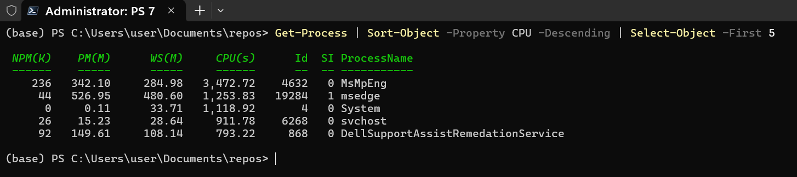
Здесь Get-Process создает **объекты** процессов. Sort-Object получает эти **объекты** и сортирует их по свойству CPU. Select-Object получает отсортированные **объекты** и выбирает первые 5.
Вы наверняка заметили в команде слова, начинающиеся с дефиса (-): -Property, -Descending, -First. Это параметры.
Параметры — это настройки, переключатели и инструкции для командлета. Они позволяют управлять тем, **КАК** команда будет выполнять свою работу.
Без параметров команда работает в режиме по умолчанию, а с параметрами вы даете ей конкретные указания.
Основные типы параметров:
-Property CPU: Мы говорим Sort-Object, по какому свойству сортировать. CPU — это значение параметра.
-First 5: Мы говорим Select-Object, сколько объектов выбрать. 5 — это значение параметра.
-Descending: Этот флаг говорит Sort-Object изменить порядок сортировки на обратный (от большего к меньшему). Ему не нужно дополнительное значение — он сам по себе инструкция.
Get-Process -Name 'svchost' | Measure-Object
Эта команда отвечает на очень простой вопрос:
**"Сколько именно процессов с именем svchost.exe сейчас запущено в моей системе?"**
Get-Process -Name 'svchost'**Эта часть команды обращается к операционной системе и просит найти **все без исключения** запущенные процессы, у которых имя исполняемого файла — svchost.exe.
В отличие от процессов типа notepad (которых обычно один или два), процессов svchost в системе всегда **много**. Команда вернет **массив (коллекцию) объектов**,
где каждый объект — это отдельный, полноценный процесс svchost со своим уникальным ID, использованием памяти и т.д.
PowerShell нашел в системе, например, 90 процессов svchost и теперь держит в руках коллекцию из 90 объектов.
| (Оператор конвейера)**Этот символ берет коллекцию из 90 объектов svchost, полученную на первом шаге, и начинает передавать их **по одному** на вход следующей команде.
Measure-Object**Поскольку мы вызвали Measure-Object без параметров (таких как -Property, -Sum и т.д.), он выполняет свою операцию **по умолчанию** — просто считает количество "предметов", которые ему передали.
Раз, два, три ... После того как все объекты посчитаны, Measure-Object создает **свой собственный объект-результат**, в котором есть свойство Count, равное итоговому числу.
Count: 90 — это и есть ответ на наш вопрос. Запущено 90 процессов svchost.
Остальные поля пустые, потому что мы не просили Measure-Object выполнять более сложные вычисления.
svchost и параметрамиДавайте изменим нашу задачу. Теперь мы хотим не просто посчитать процессы svchost,
а узнать, **сколько всего оперативной памяти (в мегабайтах) они потребляют вместе**.
Для этого нам понадобятся параметры:
-Property WorkingSet64: Эта инструкция говорит Measure-Object: "Из каждого объекта svchost, который к тебе придет, возьми числовое значение из свойства WorkingSet64 (это использование памяти в байтах)".-Sum: Эта инструкция-флаг говорит: "Сложи все эти значения, которые ты взял из свойства WorkingSet64".Наша новая команда будет выглядеть так:
Get-Process -Name 'svchost' | Measure-Object -Property WorkingSet64 -Sum
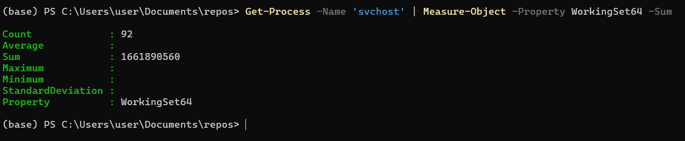
Get-Process найдет количество объектов svchost.| передаст их в Measure-Object.Measure-Object работает по-новому:
svchost, смотрит его свойство .WorkingSet64 (например, 25000000 байт) и запоминает это число..WorkingSet64 (например, 15000000 байт) и прибавляет к предыдущему.Measure-Object создаст объект-результат, но теперь он будет другим.Count: 92: Количество объектов.Sum: 1661890560: Это общая сумма всех значений WorkingSet64 в байтах.Property: WorkingSet64: Это поле теперь тоже заполнено, оно информирует нас, какое именно свойство было использовано для вычислений.$_)Переменная — это именованное хранилище в памяти, которое содержит какое-либо значение.
Этим значением может быть что угодно: текст, число, дата или, что самое важное для PowerShell,
целый объект или даже коллекция объектов. Имя переменной в PowerShell всегда начинается со знака доллара ($).
Примеры: $name, $counter, $processList.
Специальная переменная $_?
$_ — это сокращение для "текущий объект" или "вот эта штука".
Представьте себе конвейер на заводе. По нему едут разные детали (объекты).
$_ — это та самая деталь, которая находится прямо сейчас перед вами (или перед роботом-обработчиком).
Источник (Get-Process) — высыпает на конвейер целую коробку с деталями (всеми процессами).
Конвейер (|) — заставляет эти детали двигаться по ленте по одной.
Обработчик (Where-Object или ForEach-Object) — это робот, который смотрит на каждую деталь.
Переменная $_ — это та самая деталь, которая сейчас находится в "руках" у робота.
Когда робот закончит с одной деталью, конвейер подает ему следующую, и $_ теперь будет указывать уже на нее.
Давайте посчитаем, сколько всего памяти используют процессы svchost, и выведем результат на монитор.
# 1. Выполняем команду и сохраняем ее сложный объект-результат в переменную $svchostMemory
$svchostMemory = Get-Process -Name svchost | Measure-Object -Property WorkingSet64 -Sum
# 2. Теперь мы можем работать с сохраненным объектом. Достаем из него свойство Sum
$memoryInMB = $svchostMemory.Sum / 1MB
# 3. Выводим результат на экран, используя новую переменную
Write-Host "Все процессы svchost используют $memoryInMB МБ памяти."
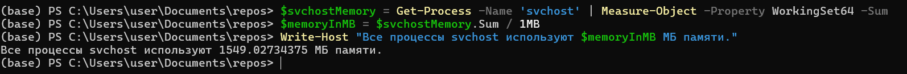
Write-Host — это специализированный командлет, чья единственная задача — **показать текст непосредственно пользователю в консоли**."..." - текстовая строка, которую мы передаем командлету Write-Host в качестве аргумента. Почему двойные, а не одинарные кавычки?В PowerShell есть два типа кавычек:
'...'):** Создают **буквальную строку**. Все, что внутри них, воспринимается как обычный текст, без исключений."..."):** Создают **расширяемую (или подстановочную) строку**. PowerShell "сканирует" такую строку на предмет переменных (начинающихся с $) и подставляет на их место их значения.$memoryInMB. Это переменная, в которую мы **на предыдущем шаге** нашего скрипта положили результат вычислений. Когда Write-Host получает строку в двойных кавычках,String Expansion)**:
PowerShell видит текст "Все процессы svchost используют ".$memoryInMB. Он понимает, что это не просто текст, а переменная.$memoryInMB (например, 1585.52)." МБ памяти.".Write-Host передается уже готовая, собранная строка: "Все процессы svchost используют 1585.52 МБ памяти.".Запустите блокнот:
$notepadProcess$notepadProcess = Get-Process -Name notepad
Id' этого объекта через точку и выводим егоWrite-Host "ID процесса 'Блокнот' равен: $($notepadProcess.Id)"
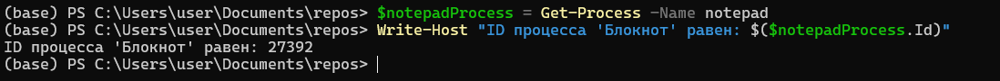
❗ Важно:
Write-Host "ломает" конвейер. Текст, выведенный им, нельзя передать дальше по конвейеру для обработки. Он предназначен только для отображения.
Get-Member (Инспектор объектов)Мы знаем, что по конвейеру "текут" объекты. Но как узнать, из чего они состоят? Какие у них есть свойства и какие действия (методы) с ними можно совершать?
командлет **Get-Member** (псевдоним: gm) главный инструмент для исследования.
Прежде чем работать с объектом, пропустите его через Get-Member, чтобы увидеть все его возможности.
Давайте проанализируем объекты, которые создает Get-Process:
Get-Process | Get-Member
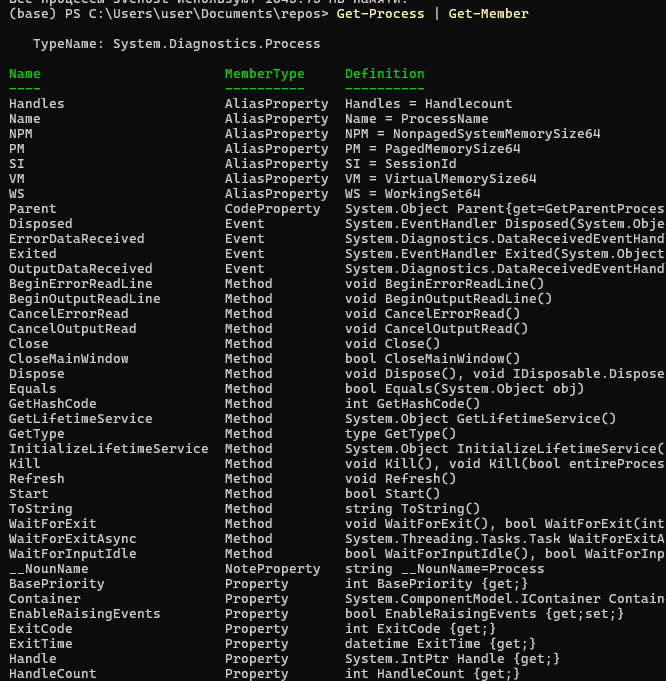
Разберем каждую часть вывода Get-Member.
TypeName: System.Diagnostics.Process - Это полное, официальное "имя типа" объекта из библиотеки .NET. Это его "паспорт".
Эта строка говорит вам, что все объекты, которые возвращает Get-Process, являются объектами типа System.Diagnostics.Process.
Это гарантирует, что у них у всех будет одинаковый набор свойств и методов.
Вы можете загуглить "System.Diagnostics.Process", чтобы найти официальную документацию Microsoft с еще более подробной информацией.
NameЭто простое, человекочитаемое **имя** свойства, метода или другого "члена" объекта. Именно это имя вы будете использовать в своем коде для доступа к данным или выполнения действий.
MemberType (Тип объекта)Это самая важная для понимания колонка. Она классифицирует, **чем является** каждый объект. Это его "должность", которая говорит вам, **КАК** его использовать.
Property (Свойство): **характеристика** или **порция данных**, хранящаяся внутри объекта. Вы можете "прочитать" ее значение.BasePriority, HandleCount, ExitCode. Это просто данные, которые можно посмотреть.Method (Метод): **ДЕЙСТВИЕ**, которое можно совершить с объектом. Методы всегда вызываются с круглыми скобками ().Kill, Refresh, WaitForExit. Вы бы написали $process.Kill() или $process.Refresh().AliasProperty (Псевдоним свойства): **дружелюбный псевдоним** для другого, более длинного свойства. PowerShell добавляет их для удобства и краткости.WS — это короткий псевдоним для WorkingSet64. Name — для ProcessName. VM — для VirtualMemorySize64.Event (Событие): **УВЕДОМЛЕНИЕ** о том, что что-то произошло, на которое можно "подписаться".Exited. Ваш скрипт может "слушать" это событие, чтобы выполнить какое-то действие сразу после того, как процесс завершится.CodeProperty и NoteProperty: специальные типы свойств, часто добавляемые самим PowerShell для удобства. CodeProperty вычисляет свое значение "на лету", а NoteProperty — это простое свойство-заметка, добавленное к объекту.Definition (Определение)Это **техническое определение** или "подпись" члена. Она дает вам точные детали для его использования. Ее содержимое зависит от MemberType:
AliasProperty: Показывает, **чему равен псевдоним**. Это невероятно полезно!WS = WorkingSet64. Вы сразу видите, что WS — это просто короткая запись для WorkingSet64.Property: Показывает **тип данных**, который хранится в свойстве (например, int для целого числа, string для текста, datetime для даты и времени), и что можно с ним делать ({get;} — только читать, {get;set;} — читать и изменять).int BasePriority {get;}. Это целочисленное свойство, которое можно только прочитать.Method: Показывает, что метод возвращает (например, void — ничего, bool — true/false) и какие **параметры** (входные данные) он принимает в скобках.void Kill(). Это значит, что метод Kill ничего не возвращает и может быть вызван без параметров. Также есть вторая версия void Kill(bool entireProcessTree), которая принимает логическое значение (true/false).| Колонка | Что это? | Пример с скриншота | Для чего? |
|---|---|---|---|
Name |
Имя, которое вы используете в коде. | Kill, WS, Name |
обратиться к свойству или методу ($process.WS, $process.Kill()). |
MemberType |
Тип члена (данные, действие и т.д.). | Method, Property, AliasProperty |
как его использовать (читать значение или вызывать с ()). |
Definition |
Технические детали. | WS = WorkingSet64, void Kill() |
что скрывается за псевдонимом и какие параметры нужны методу. |
"Я открыл много окон Блокнота. Как мне программно свернуть все, кроме главного, а затем закрыть только то, у которого в заголовке есть слово 'Untitled'?"
Get-Member:Нам нужно найти свойства, связанные с окном и его заголовком.
Get-Process -Name notepad | Get-Member
Анализ результата Get-Member:
MainWindowTitle. Тип string. Отлично, это заголовок главного окна!CloseMainWindow(). Это более "мягкий" способ закрыть окно, чем Kill().WaitForInputIdle(). Звучит интересно, возможно, это поможет дождаться, пока процесс будет готов к взаимодействию.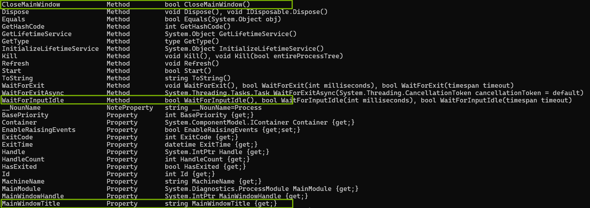
Get-Member показал нам свойство MainWindowTitle, которое является ключом к решению задачи и позволяет взаимодействовать с процессами на основе состояния их окон, а не просто по имени.
Теперь мы можем построить логику, основанную на заголовке окна.
# 1. Находим все процессы Блокнота
$notepads = Get-Process -Name notepad
# 2. Проходимся по каждому и проверяем заголовок
foreach ($pad in $notepads) {
# Для каждого процесса ($pad) проверяем его свойство MainWindowTitle
if ($pad.MainWindowTitle -like '*Untitled*') {
Write-Host "Найден несохраненный Блокнот (ID: $($pad.Id)). Закрываем его окно..."
# $pad.CloseMainWindow() # Раскомментируйте, чтобы действительно закрыть
Write-Host "Окно '$($pad.MainWindowTitle)' было бы закрыто." -ForegroundColor Yellow
} else {
Write-Host "Пропускаем Блокнот с заголовком: $($pad.MainWindowTitle)"
}
}
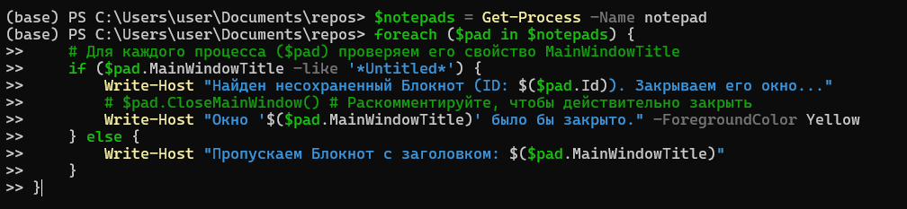
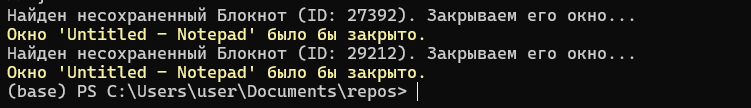
"Иногда я вижу в системе много дочерних процессов chrome.exe. Как мне узнать, какой из них является главным, "родительским" процессом, который их всех запустил?"
Get-Member:Нам нужно найти что-то, что связывает один процесс с другим.
Get-Process -Name chrome | Select-Object -First 1 | Get-Member
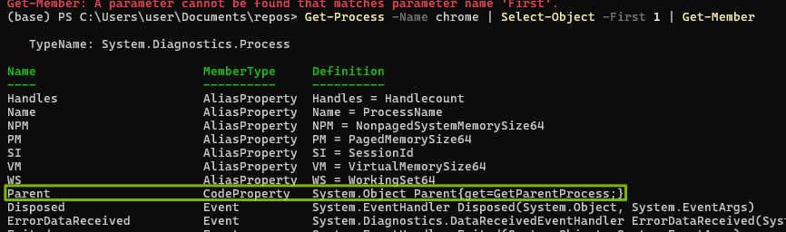
Анализ результата Get-Member:
CodeProperty с именем Parent.Definition) — System.Diagnostics.Process Parent{get=GetParentProcess;}.Теперь мы можем написать скрипт, который для каждого процесса chrome будет выводить информацию о его родителе.
# 1. Получаем все процессы chrome
$chromeProcesses = Get-Process -Name chrome
# 2. Для каждого из них выводим информацию о нем и его родителе
$chromeProcesses | Select-Object -First 5 | ForEach-Object {
# Получаем родительский процесс
$parent = $_.Parent
# Формируем красивый вывод
Write-Host "Процесс:" -ForegroundColor Green
Write-Host " - Имя: $($_.ProcessName), ID: $($_.Id)"
Write-Host "Его родитель:" -ForegroundColor Yellow
Write-Host " - Имя: $($parent.ProcessName), ID: $($parent.Id)"
Write-Host "-----------------------------"
}
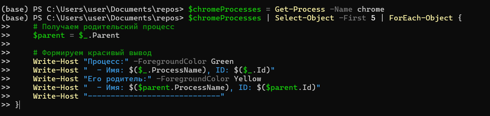
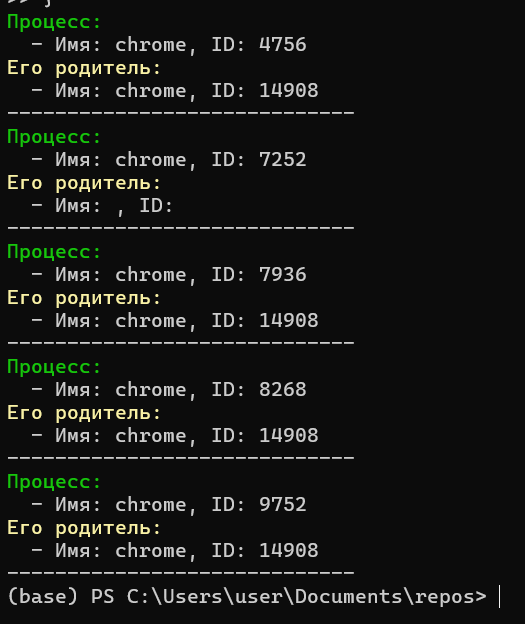
Мы сразу видим, что процессы с ID 4756, 7936, 8268 и 9752 были запущены процессом с ID 14908. Также можно заметить интересный случай с процессом ID: 7252, у которого родительский процесс не определился (возможно, родитель уже успел завершиться к моменту проверки). Модификация скрипта с проверкой if ($parent) аккуратно обрабатывает этот случай, не вызывая ошибки.
Get-Member помог нам обнаружить "скрытое" свойство Parent, которое предоставляет мощные возможности для анализа иерархии процессов.
Когда ваша цепочка команд становится полезной, вы захотите сохранить ее для многократного использования. Для этого и нужны **скрипты** — текстовые файлы с расширением **.ps1**.
По умолчанию в Windows запрещен запуск локальных скриптов. Чтобы это исправить **для текущего пользователя**, выполните один раз в PowerShell **от имени администратора**:
Set-ExecutionPolicy RemoteSigned -Scope CurrentUser
Это безопасная настройка, которая разрешает запускать ваши собственные скрипты и скрипты, подписанные доверенным издателем.
system_monitor.ps1Создайте файл с таким именем и вставьте в него код ниже. Этот скрипт собирает информацию о системе и генерирует отчеты.
# system_monitor.ps1
#requires -Version 5.1
<#
.SYNOPSIS
Скрипт для создания отчета о состоянии системы.
.DESCRIPTION
Собирает информацию о процессах, службах и дисковом пространстве и генерирует отчеты.
.PARAMETER OutputPath
Путь для сохранения отчетов. По умолчанию 'C:\Temp'.
.EXAMPLE
.\system_monitor.ps1 -OutputPath "C:\Reports"
#>
param(
[Parameter(Mandatory=$false)]
[string]$OutputPath = "C:\Temp"
)
# --- Блок 1: Подготовка ---
Write-Host "Подготовка к созданию отчета..." -ForegroundColor Cyan
if (!(Test-Path $OutputPath)) {
New-Item -ItemType Directory -Path $OutputPath -Force | Out-Null
}
# --- Блок 2: Сбор данных ---
Write-Host "Сбор информации..." -ForegroundColor Green
$processes = Get-Process | Sort-Object CPU -Descending
$services = Get-Service | Group-Object Status | Select-Object Name, Count
# --- Блок 3: Вызов функции для экспорта (см. следующий раздел) ---
Export-Results -Processes $processes -Services $services -OutputPath $OutputPath
Write-Host "Отчеты успешно сохранены в папке $OutputPath" -ForegroundColor Magenta
Примечание: функция Export-Results будет определена в следующем разделе как пример хорошей практики.
Чистые данные — это хорошо, но часто их нужно представить в удобном для человека или другой программы виде. PowerShell предлагает множество командлетов для экспорта.
| Метод | Команда | Описание |
|---|---|---|
| Простой текст | ... \| Out-File C:\Temp\data.txt |
Перенаправляет текстовое представление в файл. |
CSV (для Excel) |
... \| Export-Csv C:\Temp\data.csv -NoTypeInfo |
Экспортирует объекты в CSV. -NoTypeInfo убирает служебную первую строку. |
HTML-отчет |
... \| ConvertTo-Html -Title "Отчет" |
Создает HTML-код из объектов. |
JSON (для API, веб) |
... \| ConvertTo-Json |
Преобразует объекты в формат JSON. |
XML (родной формат PowerShell) |
... \| Export-Clixml C:\Temp\data.xml |
Сохраняет объекты со всеми типами данных. Их можно идеально восстановить через Import-Clixml. |
Давайте добавим в наш скрипт system_monitor.ps1 функцию, которая будет заниматься экспортом. Поместите этот код **перед** вызовом Export-Results.
function Export-Results {
param(
$Processes,
$Services,
$OutputPath
)
$timestamp = Get-Date -Format "yyyy-MM-dd_HH-mm"
# Экспорт в CSV
$Processes | Select-Object -First 20 | Export-Csv (Join-Path $OutputPath "processes_$timestamp.csv") -NoTypeInformation
$Services | Export-Csv (Join-Path $OutputPath "services_$timestamp.csv") -NoTypeInformation
# Создание красивого HTML-отчета
$htmlReportPath = Join-Path $OutputPath "report_$timestamp.html"
$processesHtml = $Processes | Select-Object -First 10 Name, Id, CPU | ConvertTo-Html -Fragment -PreContent "<h2>Топ-10 процессов по CPU</h2>"
$servicesHtml = $Services | ConvertTo-Html -Fragment -PreContent "<h2>Статистика служб</h2>"
ConvertTo-Html -Head "<title>Отчет о системе</title>" -Body "<h1>Отчет о системе от $(Get-Date)</h1> $($processesHtml) $($servicesHtml)" | Out-File $htmlReportPath
}
Теперь наш скрипт не просто собирает данные, но и аккуратно сохраняет их в двух форматах: CSV для анализа и HTML для быстрого просмотра.
|) — главный инструмент для объединения команд и обработки объектов.Get-Member — анализ объектов, который показывает, из чего они состоят.$var, $_) позволяют сохранять данные и обращаться к текущему объекту в конвейере..ps1 превращают команды в переиспользуемые инструменты автоматизации.Export-Csv, ConvertTo-Html) Экспортируют данные в соответствующем формате.В следующей части мы применим эти знания для навигации и управления файловой системой, исследуя объекты System.IO.DirectoryInfo и System.IO.FileInfo.